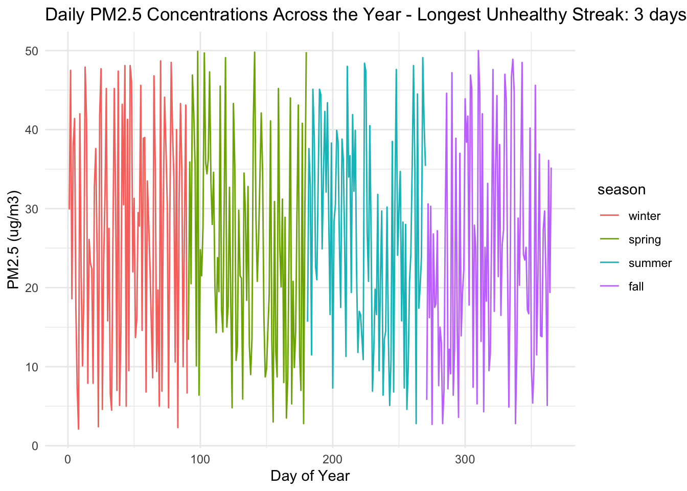
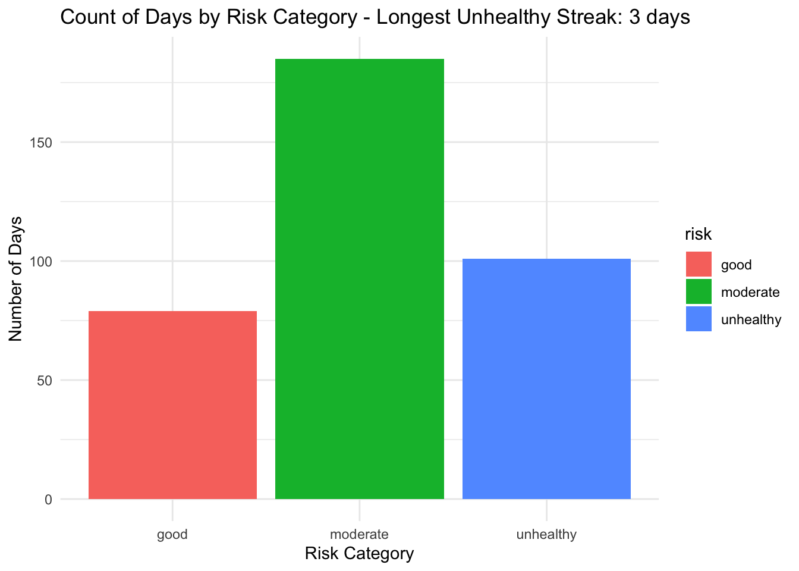

library(ggplot2)Assignment 3: Air Quality Risk Assessment
Load Packages
Part 1: Build the Dataset
# create a sequence of PM2.5 values to sample from
possible_pm25 <- seq(from = 2, to = 50, by = 0.1)
# sample 365 days worth of readings
pm25_readings <- sample(possible_pm25, size = 365, replace = TRUE)
# make it a data frame
air_quality <- data.frame(day = 1:365,
pm25 = pm25_readings)
# take a look
head(air_quality) day pm25
1 1 29.9
2 2 47.5
3 3 18.6
4 4 38.0
5 5 41.4
6 6 17.3summary(air_quality$pm25) Min. 1st Qu. Median Mean 3rd Qu. Max.
2.10 13.70 25.20 25.59 37.00 50.00 # assign season based on day number
# days 1-90 = winter, 91-180 = spring, 181-270 = summer, 271-365 = fall
air_quality$season <- ifelse(air_quality$day <= 90, "winter",
ifelse(air_quality$day <= 180, "spring",
ifelse(air_quality$day <= 270, "summer", "fall")))
# store it as a factor
air_quality$season <- factor(air_quality$season,
levels = c("winter", "spring", "summer", "fall"))
# check it looks right
head(air_quality) day pm25 season
1 1 29.9 winter
2 2 47.5 winter
3 3 18.6 winter
4 4 38.0 winter
5 5 41.4 winter
6 6 17.3 wintertail(air_quality) day pm25 season
360 360 29.7 fall
361 361 21.1 fall
362 362 5.1 fall
363 363 36.1 fall
364 364 19.4 fall
365 365 35.2 fallsummary(air_quality$season)winter spring summer fall
90 90 90 95 # add risk column, initialized to NA for now
air_quality$risk <- NA
# check it
head(air_quality) day pm25 season risk
1 1 29.9 winter NA
2 2 47.5 winter NA
3 3 18.6 winter NA
4 4 38.0 winter NA
5 5 41.4 winter NA
6 6 17.3 winter NAsummary(air_quality) day pm25 season risk
Min. : 1 Min. : 2.10 winter:90 Mode:logical
1st Qu.: 92 1st Qu.:13.70 spring:90 NA's:365
Median :183 Median :25.20 summer:90
Mean :183 Mean :25.59 fall :95
3rd Qu.:274 3rd Qu.:37.00
Max. :365 Max. :50.00 Why We Chose This Distribution
We used sample() to randomly pick 365 PM2.5 values from a range of 2 to 50 µg/m³. We chose this range because we looked up typical urban PM2.5 levels and according to the EPA, most days in a city fall somewhere between 5 and 25 µg/m³, but it can spike higher during things like wildfires or heavy traffic. We thought a range of 2 to 50 made sense because it covers normal days but also includes some realistically bad ones, so we’d see a mix of all three risk categories in the data.
Part 2: Classify Risk with a For Loop
Risk Classification Rules
- good: PM2.5 below 12 µg/m³
- moderate: PM2.5 between 12 and 35.4 µg/m³
- unhealthy: PM2.5 above 35.4 µg/m³
Use a For Loop to Fill Risk Column
current_streak <- 0
max_unhealthy_streak <- 0
for (i in 1:nrow(air_quality)) {
# add today's pm25
today_pm25 <- air_quality$pm25[i]
# classify risk
if (today_pm25 < 12) {
air_quality$risk[i] <- "good"
} else if (today_pm25 <= 35.4) {
air_quality$risk[i] <- "moderate"
} else {
air_quality$risk[i] <- "unhealthy"
}
# check the streak - was yesterday also unhealthy?
if (air_quality$risk[i] == "unhealthy") {
if (i > 1 && air_quality$risk[i-1] == "unhealthy") {
current_streak <- current_streak + 1 # keep the streak going
} else {
current_streak <- 1 # start a fresh streak
}
} else {
current_streak <- 0 # not unhealthy so reset
}
# update max if current streak is the longest so far
if (current_streak > max_unhealthy_streak) {
max_unhealthy_streak <- current_streak
}
}
# check results
table(air_quality$risk)
good moderate unhealthy
79 185 101 cat("Longest unhealthy streak:", max_unhealthy_streak, "days")Longest unhealthy streak: 3 daysPart 3: Seasonal Summary with a For Loop
Count Unhealthy Days by Season
# create a vector to store our counts, one slot per season
unhealthy_counts = c(winter = 0, spring = 0, summer = 0, fall = 0)
# loop through every day
for (i in 1:nrow(air_quality)) {
# use today's season and risk
today_season = air_quality$season[i]
today_risk = air_quality$risk[i]
# if today is unhealthy, add 1 to that season's count
if (today_risk == "unhealthy") {
unhealthy_counts[today_season] = unhealthy_counts[today_season] + 1
}
}
# check results
unhealthy_countswinter spring summer fall
29 22 25 25 Convert Seasonal Summary to Data Frame
# convert to data frame for plotting
unhealthy_summary = data.frame(
season = names(unhealthy_counts),
unhealthy_days = as.numeric(unhealthy_counts))
unhealthy_summary season unhealthy_days
1 winter 29
2 spring 22
3 summer 25
4 fall 25Part 4: Visualize and Report
Plot 1: PM2.5 Across the Year
# make the title first using sprintf, including our max streak
plot_title = sprintf("Daily PM2.5 Concentrations Across the Year - Longest Unhealthy Streak: %d days", max_unhealthy_streak)
# now plot
plot_title = sprintf("Daily PM2.5 Concentrations Across the Year - Longest Unhealthy Streak: %d days", max_unhealthy_streak)
ggplot(air_quality, aes(x = day, y = pm25, color = season)) +
geom_line() +
labs(title = plot_title,
x = "Day of Year",
y = "PM2.5 (ug/m3)") +
theme_minimal()
Plot 2: Count of Risk Categories
# make the title using sprintf
bar_title = sprintf("Count of Days by Risk Category - Longest Unhealthy Streak: %d days", max_unhealthy_streak)
# now plot
ggplot(air_quality, aes(x = risk, fill = risk)) +
geom_bar() +
labs(title = bar_title,
x = "Risk Category",
y = "Number of Days") +
theme_minimal()
Management Summary
This data is a simulation of 365 days of PM2.5 air quality readings over the course of a year. The majority of days fell into the moderate risk category, with a smaller number of good days (around 75). There were around 110 unhealthy days, and the longest consecutive streak of unhealthy days was 5 days in a row. Out of all the seasons, fall had the most unhealthy days (39), which may be due to wildfires that occur that time of year. From a management perspective, launching a public alert system that automatically notifies residents when unhealthy conditions are forecast, particularly heading into fall could be useful in ensuring public health. Additionally, we recommend investigating the specific emission sources contributing to the high number of unhealthy days and considering whether stricter local regulations or emission controls are warranted. Lastly, continued monitoring is essential to track whether conditions improve over time.